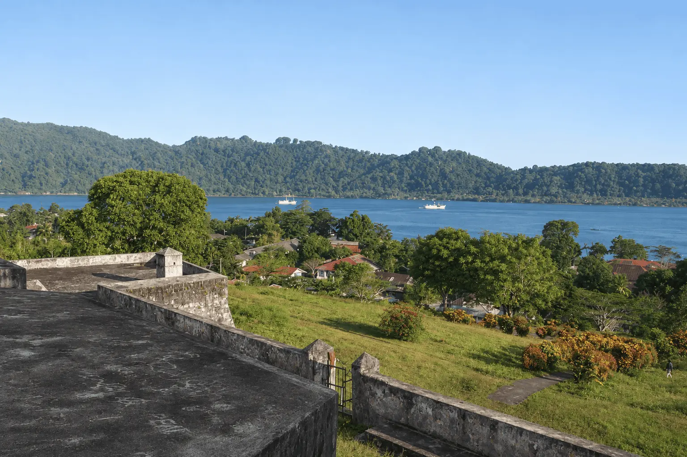
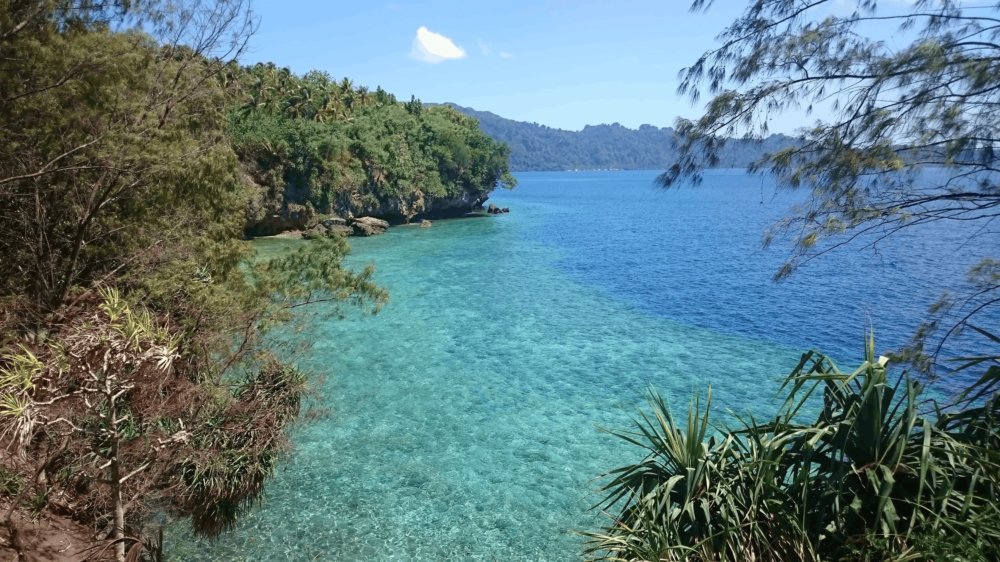
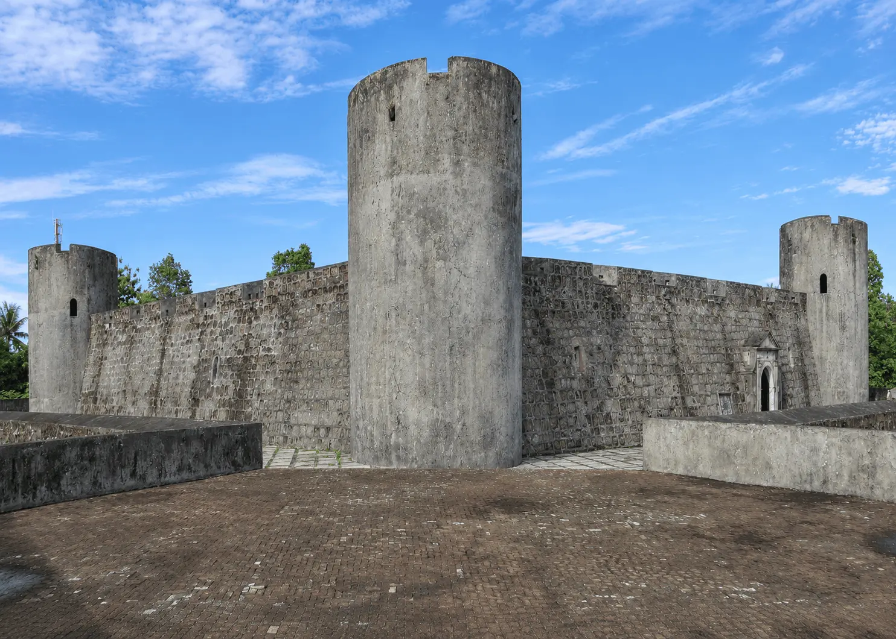
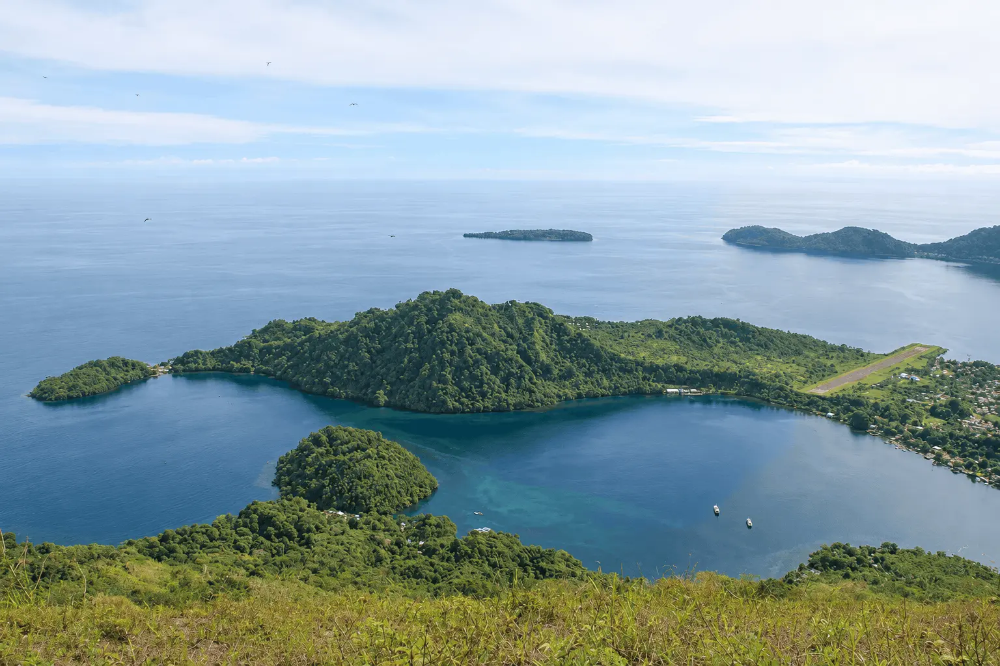
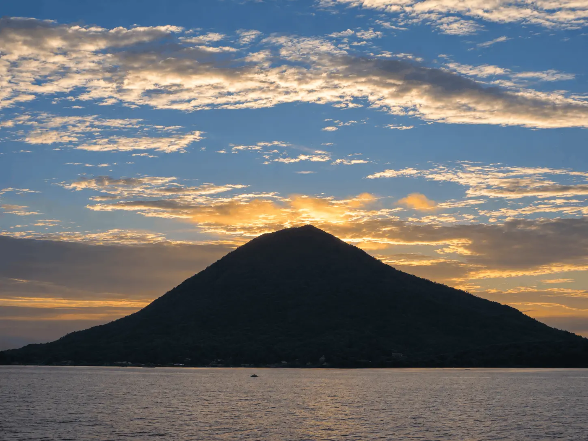

Pulau Banda
Banda Besar / Lontor
Open map
Walk through spice-trade history. Take the slow way across the Banda Sea.
Start among the stone towers of Fort Belgica. Spend the afternoon on the water, then stay for sunset over Gunung Api.

From the old streets of Neira, head up to the fort for a view across the harbor. Take time to see the stone towers up close.
Take a boat out into the bay for a different view of the islands, or ask a local operator about snorkeling. Check sea conditions before heading out.
Check travel tips
Ask your host about a boat to one of these neighboring islands.
Explore the Island Map
Banda Besar / Lontor
Open map
A village on the western edge of the Banda Islands.
Open map